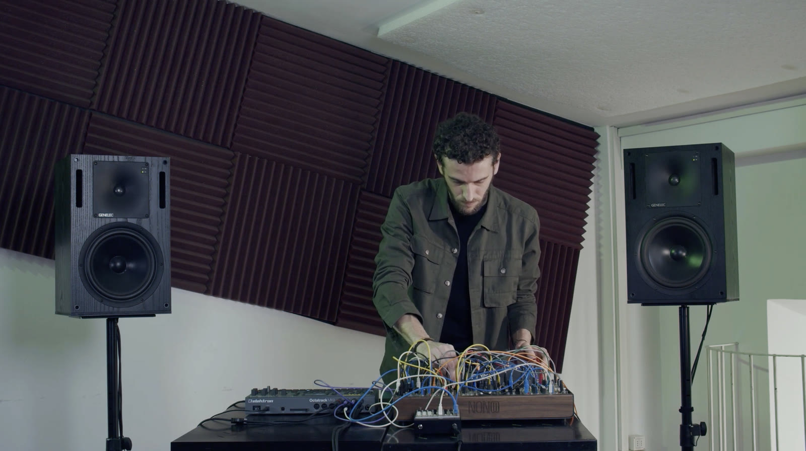
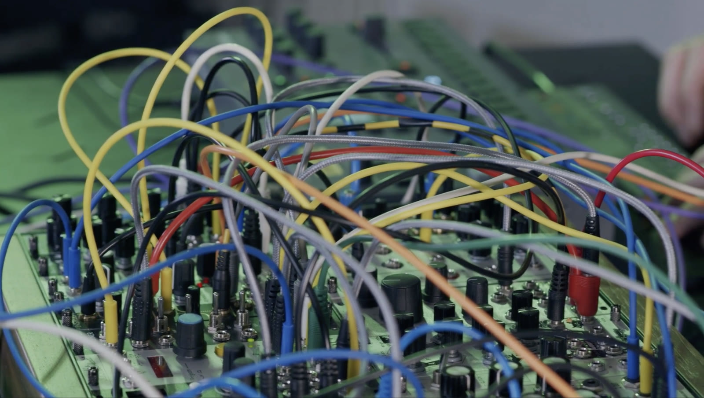
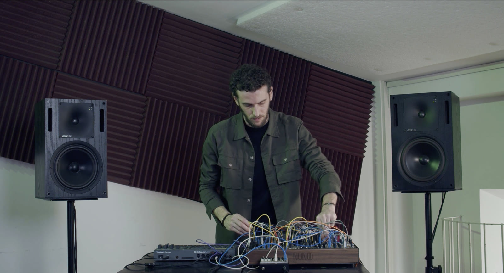

← Tutti i lavori
Semana Humara
Semana Humara nasce dall'idea di costruire una voce musicale «universale» a partire da frasi no sense, registrate con la cantante Clara La Licata e tratte da «Al paese dei Tarahumara» di Antonin Artaud.
L'elaborazione della voce campionata costruisce una narrazione in dialogo con suoni di feedback e di sintesi.


